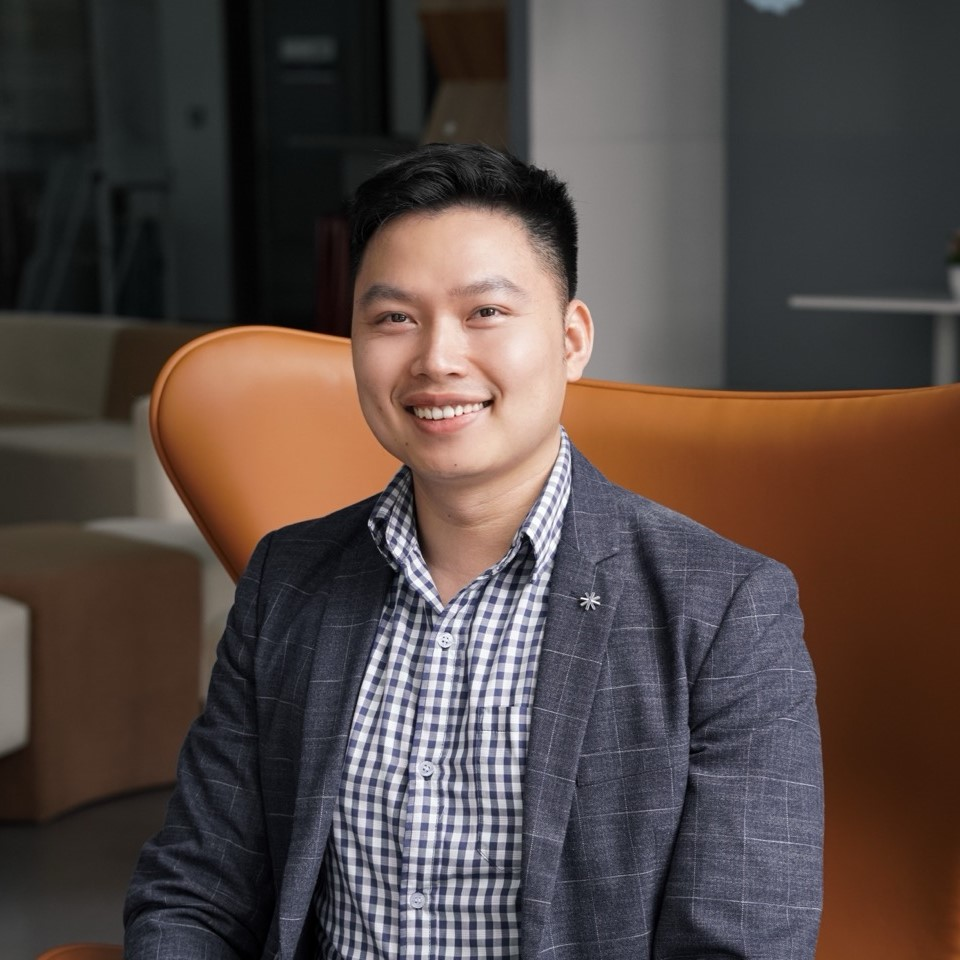
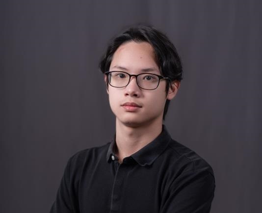
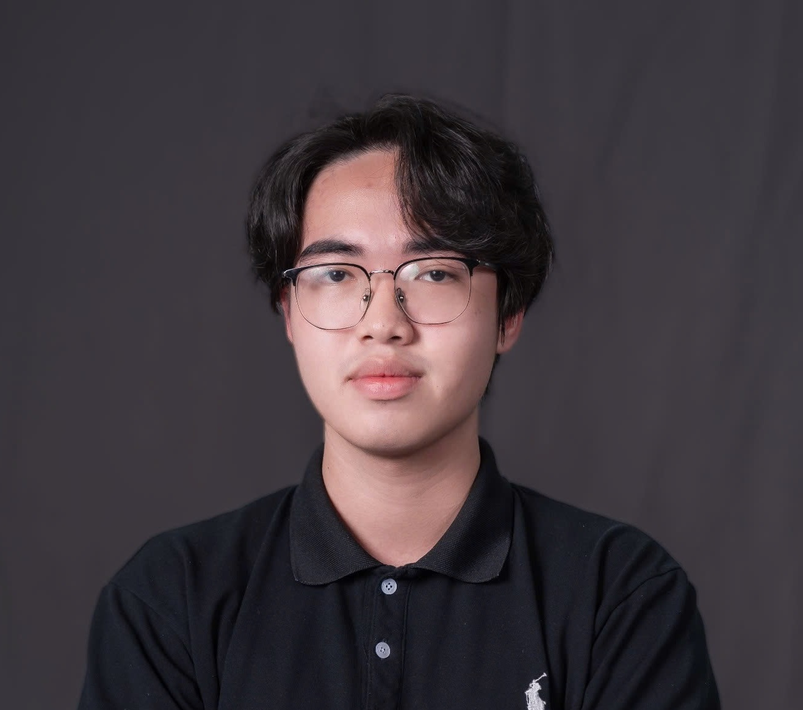
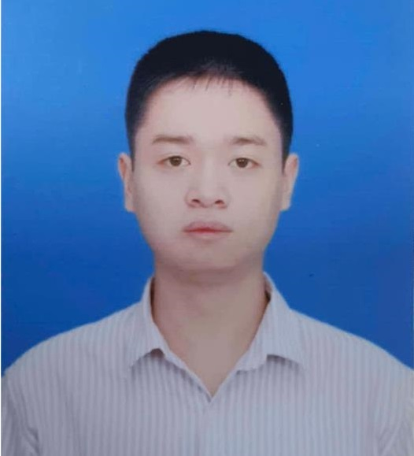

Organising committee
LLMs4All organisers
The workshop was organised by researchers from VinUniversity and the NLP @ VinUniversity Research Group.

Mo El-Haj
General Chair
VinUniversity

Wray Buntine
Programme Chair
VinUniversity

Le Duy Dung
Programme Chair
VinUniversity
Vo Diep Nhu
Publication Chair
VinUniversity

Nguyen Tran Nhat Minh
Publication Chair
VinUniversity

Tran Anh Chuong
Publicity Chair
VinUniversity

Ta Quang Hieu
Publicity Chair
VinUniversity
Pham Dinh Hieu
Publicity Chair
VinUniversity